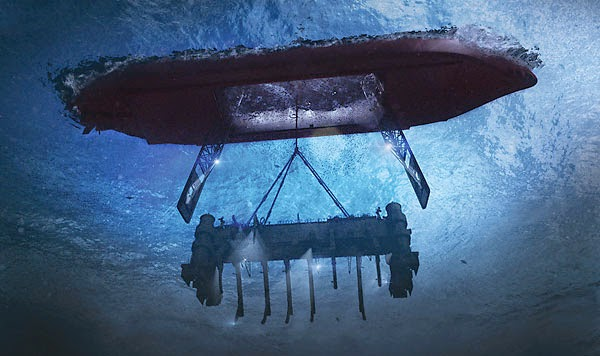

<!DOCTYPE html><html><head><title>Echo Techologies</title><meta name="viewport" content="width=device-width, initial-scale=1"><meta content="text/html; charset=utf-8" http-equiv="Content-Type"><link href="bundle.css" rel="stylesheet"></head></html><body><header><ul id="nav"><a href="/"><div id="logo-text"><span class="title">ECHO</span><span id="blurb">Technologies</span></div></a><div id="links"><li><a href="/about.html"><h6>About</h6></a></li><li><a href="/donate.html"><h6>Donate</h6></a></li><li><a href="/outreach.html"><h6>Outreach</h6></a></li><li><a href="/interns.html"><h6>Interns</h6></a></li></div><i class="mdi mdi-menu" id="sidenav-trigger"></i></ul><ul id="sidenav"><i class="mdi mdi-close" id="close"></i><div id="links"><li><a href="/"><h6>Home</h6></a></li><li><a href="/about.html"><h6>About</h6></a></li><li><a href="/donate.html"><h6>Donate</h6></a></li><li><a href="/outreach.html"><h6>Outreach</h6></a></li><li><a href="/interns.html"><h6>Interns</h6></a></li></div></ul><div id="backdrop"></div><div id="loader"><div></div><div></div></div></header><main><div id="content"><div class="section" id="intro"><h1 class="title">ECHO TECHNOLOGIES</h1><h6>Ideas worth hearing</h6></div><div class="section" id="project"><div class="left"><h2 class="title">Project Azorian</h2><p>CAMS Advanced Research Projects Agency (CARPA) Initiative has tasked ECHO Technologies to design and build a UAV/UUV vehicle named Megalodon that can recover the items of interest from the K-129 crash site after pinpointing a signal from a UUV vehicle named Remora that located those items of interest and recovered the radioactive items.</p><p>This mission is an attempt to recover the leftover parts from a nuclear capable  K-129 crash that the CIA failed to completely recover the ocean floor. As a ship was raising the K-129 from the ocean floor, it broke apart and part of the submarine was lost.</p><p>The mission will begin with the Megalodon picking up and placing Remora into the water to locate the crash site. Once the crash site is located, Remora will recover the radioactive items after inspecting the crash site with a UV light and then rise to the surface to signal for the Megalodon. The Megalodon will then transition to underwater, and swim to the crash site to recover the remainder of the K-129. The Megalodon will deposit the parts it collects before coming back for Remora where it picks Remora up and travels back to land.</p></div></div><div class="section" id="robots"><div class="center"><h2 class="title">Megalodon and Remora</h2><p>Project Azorian requires two vehicles working together to locate and recover remains of a K-129 submarine on the ocean floor. Echo Technologies is developing two separate underwater vehicles to accomplish this task. The first is named Remora which will be able to locate the crash site on the ocean floor signal for the second vehicle and collect the radioactive parts of the K-129. The second vehicle is named Megalodon which will carry the Remora near the crash site and drop it into the water. After receiving a beacon from the Remora, it will enter the water and collect the non-radioactive parts at the crash site. The Megalodon will then leave the water to pick up Remora and fly back to land to deposit the objects of interest.</p></div></div></div></main><footer class="section"><div id="logo-text"><h4 class="title">ECHO</h4><h4 id="blurb">Technologies</h4></div><div class="column"><h5>Contact</h5><div class="mdi-set"><a href='ma&#105;lto&#58;&#101;cho%&#55;4e&#99;%6&#56;&#37;6E%&#54;F%&#54;&#67;ogy201%39&#64;g&#37;6D&#97;&#105;&#37;6C&#46;com'><i class="mdi mdi-email"></i></a></div></div><div class="column"><h5>Follow Us</h5><div class="mdi-set" id="icons"><a href="https://www.instagram.com/echo.technologies/" target="_blank"><i class="mdi mdi-instagram"></i></a><a href="https://www.linkedin.com/in/echo-technology-66011616b/" target="_blank"><i class="mdi mdi-linkedin"></i></a><!--<i class="mdi mdi-facebook-box"></i>
<i class="mdi mdi-youtube"></i>--></div></div></footer><script src="https://code.jquery.com/jquery-2.2.4.min.js" integrity="sha256-BbhdlvQf/xTY9gja0Dq3HiwQF8LaCRTXxZKRutelT44=" crossorigin="anonymous"></script><script src="https://cdn.jsdelivr.net/npm/legit-ripple@1.1.0/dist/ripple.min.js" integrity="sha256-kpZ0Yzm1lhJVqvZj/SzmB8y/rTjGiPac2ufSxqIBfUk=" crossorigin="anonymous"></script><script src="https://cdnjs.cloudflare.com/ajax/libs/Chart.js/2.7.3/Chart.min.js" integrity="sha256-oSgtFCCmHWRPQ/JmR4OoZ3Xke1Pw4v50uh6pLcu+fIc=" crossorigin="anonymous"></script><script type="text/javascript" src="bundle.js"></script></body>